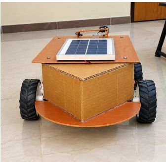
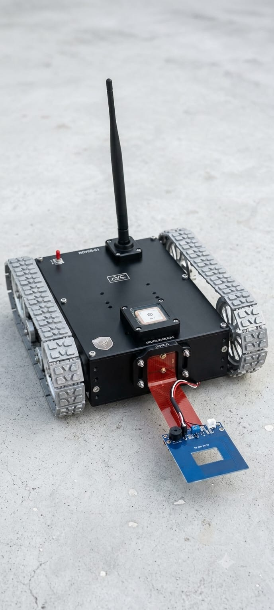
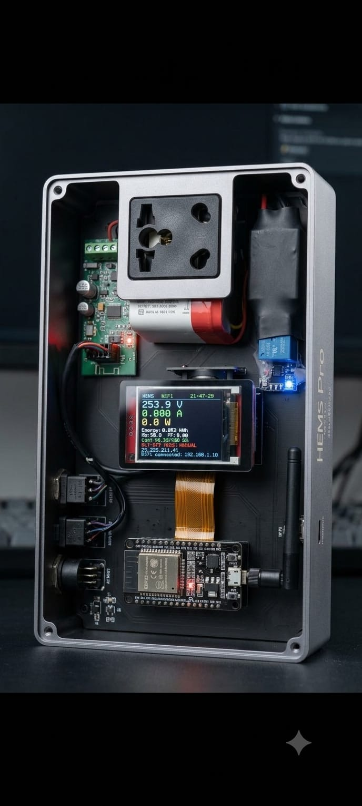

● OPEN TO FULL-TIME · DEC 2026KADIYALA
KADIYALA
ANIRUDH SINGH.
Building intelligent systems through hardware, IoT & embedded technology.
Hardware DeveloperEmbedded SystemsIoT Developer
ADD
YOUR
PHOTOassets/profile.jpg
⚡ Embedded & IoT📍 Hyderabad, IndiaYOUR
PHOTOassets/profile.jpg
Curious mind.
Practical builder.
Final-year B.Tech student with hands-on project experience in IoT, embedded systems, robotics, and hardware development. Experienced in working with sensors, microcontrollers, and actuators, with practical exposure to antenna design and electromagnetic simulation during project training at DRDO–DLRL.
Seeking an entry-level opportunity to contribute to engineering projects and strengthen technical skills.
BASED INHyderabad, IndiaFOCUSHardware · IoT · Embedded
Technical toolkit
Hardware
SensorsMicrocontrollersActuatorsSoftware & Tools
HFSSEmbedded C++Ideas into systems.

AgriX
Smart Grass Cutter Rover

TerraShield X
Landmine Detection Rover

HEMS
Home Energy Management System
Click a project card for its overview.
Experience & research.
EDODWAJA PVT. LTD.
Hyderabad, Telangana, India
- Contributed to R&D activities, supporting technical problem-solving and development tasks.
- Gained practical exposure to project development, technical research, and implementation of engineering solutions.
DRDO – DLRL
Hyderabad, India
- Worked under Dr. Madhavi Chandra, Scientist-E, in the Antenna Wing.
- Contributed to a 5G triband patch antenna design using HFSS.
- Gained hands-on experience in antenna design and electromagnetic simulation.
Education timeline.
Information Technology
St. Martin's Engineering College, Hyderabad
7.63 / 10 CGPAData Structures & Algorithms, OOP, DBMS, Operating Systems, Computer Networks, Software Engineering, Web Technologies, Cloud Computing.
Electronics & Communication Engineering
Teegala Krishna Reddy Engineering College
8.90 / 10 CGPAElectronic Devices & Circuits, Digital Electronics, Analog & Digital Communication, Microprocessors, Measurements & Instrumentation, Embedded Systems.
Kakatiya High School
10 / 10 CGPAAchievements & recognition.
Quantanova V2
2nd position in a 24-hour national-level hackathon at St. Martin's Engineering College, Hyderabad (July 19–20, 2025).
GENOS'22
National-level technical symposium and trivia quiz, JNTUH University College of Engineering Hyderabad.
SANKALP 2K24
Project Expo organized by the ECE Department at Teegala Krishna Reddy Engineering College.
SOF National Science Olympiad
Silver Medal for Performance Excellence at School Level.
Let's build something
innovative together.
Open to full-time opportunities from December 2026.